Non-Spatial Random Forest Models
Source:vignettes/articles/non_spatial_models.Rmd
non_spatial_models.RmdIntroduction
This tutorial demonstrates how to fit and interpret non-spatial
random forest models using the spatialRF package. You’ll
learn how to explore spatial data, find promising variable interactions,
train models, evaluate performance, and understand variable
importance.
If you’re interested in addressing spatial autocorrelation in your model residuals, see the Spatial Random Forest Models tutorial.
Setup
The following libraries are required for this tutorial.
library(spatialRF)
library(ggplot2)
library(dplyr)
library(DT)
library(rnaturalearth)
library(rnaturalearthdata)
library(randomForestExplainer)
library(parallel)
library(patchwork)Many functions in the package also support a parallelization backend to speed-up execution.
cluster <- parallel::makeCluster(
parallel::detectCores() - 1,
type = "PSOCK"
)The package includes the example dataset plants_df
with plant species richness and predictors for 227 ecoregions in the
Americas. The object plants_distance
is a matrix of geographical distances between ecoregions.
data(
plants_df, #training data frame
plants_response, #response name
plants_predictors, #predictors names
plants_distance, #distance matrix in km
plants_xy #case coordinates of plants_df
)
#distance thresholds (same units as plants_distance, km)
#used to assess spatial correlation at different distances
distance_thresholds <- c(10, 100, 1000, 2000, 4000, 8000)
#a pretty color palette
colors <- grDevices::hcl.colors(
n = 100,
palette = "Zissou 1"
)The figure below shows the response variable richness_species_vascular in space.
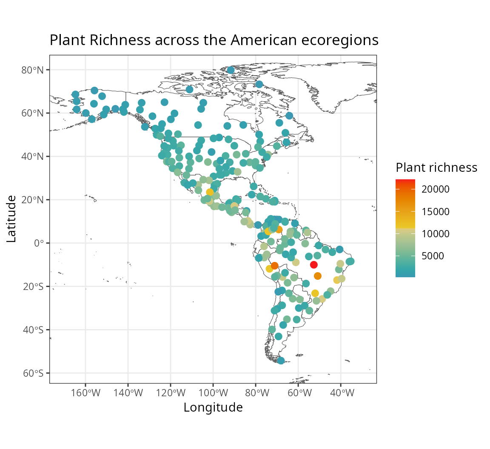
The predictors, stored in plants_predictors
represent diverse factors that may influence plant richness such as
sampling bias, the area of the ecoregion, climatic variables, human
presence and impact, topography, geographical fragmentation, and
features of the neighbors of each ecoregion.
The figure below shows the scatterplots of the response variable
(y axis) against each predictor (x axis).
spatialRF::plot_training_df(
data = plants_df,
dependent.variable.name = plants_response,
predictor.variable.names = plants_predictors,
point.color = colors,
ncol = 3
)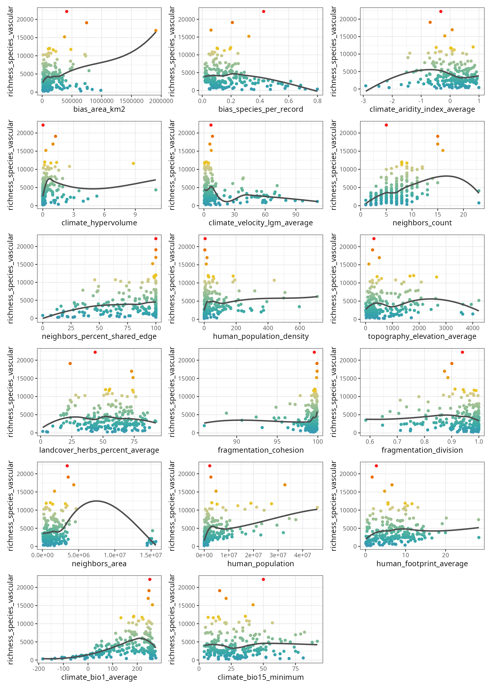
The function plot_training_df_moran()
shows the spatial autocorrelation of the response and the predictors
across different distance thresholds. Low Moran’s I and p-values equal
to or larger than 0.05 indicate that there is no spatial autocorrelation
for the given variable and distance threshold.
spatialRF::plot_training_df_moran(
data = plants_df,
dependent.variable.name = plants_response,
predictor.variable.names = plants_predictors,
distance.matrix = plants_distance,
distance.thresholds = distance_thresholds,
fill.color = colors
)
Finding promising variable interactions
The function the_feature_engineer()
tests all possible interactions between the most important predictors,
and selects the most promising ones via spatial cross-validation (see rf_evaluate()).
interactions <- spatialRF::the_feature_engineer(
data = plants_df,
dependent.variable.name = plants_response,
predictor.variable.names = plants_predictors,
xy = plants_xy,
cluster = cluster,
point.color = colors,
verbose = TRUE
)
#> ┌──────────────────┬──────────────────┬──────────────────┬──────────────────┐
#> │ Interaction │ Importance (% of │ R-squared │ Max cor with │
#> │ │ max) │ improvement │ predictors │
#> ├──────────────────┼──────────────────┼──────────────────┼──────────────────┤
#> │ human_population │ 91.4 │ 0.036 │ 0.64 │
#> │ ..x..bias_area_k │ │ │ │
#> │ m2 │ │ │ │
#> ├──────────────────┼──────────────────┼──────────────────┼──────────────────┤
#> │ climate_bio1_ave │ 57.5 │ 0.038 │ 0.74 │
#> │ rage..pca..clima │ │ │ │
#> │ te_hypervolume │ │ │ │
#> ├──────────────────┼──────────────────┼──────────────────┼──────────────────┤
#> │ climate_bio1_ave │ 89.4 │ 0.063 │ 0.34 │
#> │ rage..pca..human │ │ │ │
#> │ _population_dens │ │ │ │
#> │ ity │ │ │ │
#> └──────────────────┴──────────────────┴──────────────────┴──────────────────┘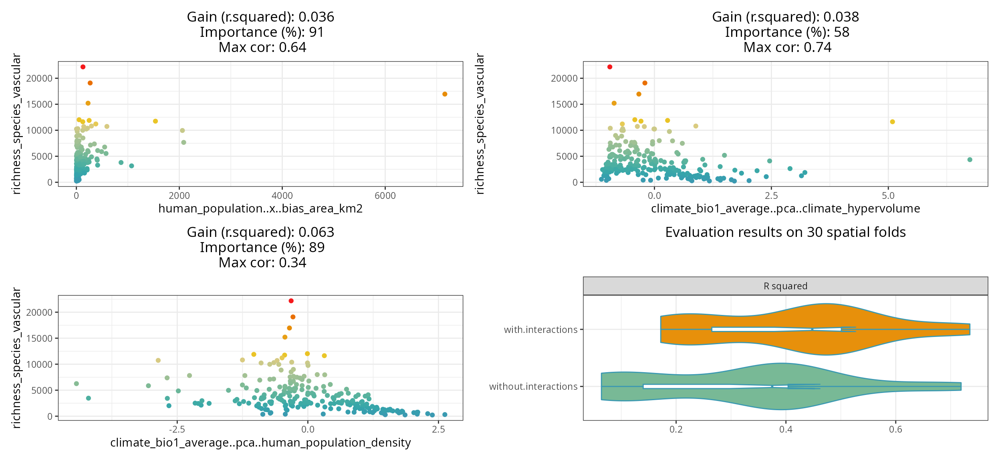
The resulting plot shows the selected interactions against the response, the model improvement they produce, their importance relative to the other predictors, and maximum correlation with the other predictors.
The violin-plot shows the cross-validation comparison of the model with and without the selected interactions.
The function also returns a data frame with the complete screening results.
| interaction.name | interaction.importance | interaction.metric.gain | max.cor.with.predictors | variable.a.name | variable.b.name | selected |
|---|---|---|---|---|---|---|
| human_population..x..bias_area_km2 | 91.361 | 0.036 | 0.6373850 | human_population | bias_area_km2 | TRUE |
| climate_bio1_average..pca..climate_hypervolume | 57.530 | 0.038 | 0.7400000 | climate_bio1_average | climate_hypervolume | TRUE |
| climate_bio1_average..pca..human_population_density | 89.370 | 0.063 | 0.3400000 | climate_bio1_average | human_population_density | TRUE |
| climate_bio1_average..pca..human_population | 100.000 | 0.055 | 0.2800000 | climate_bio1_average | human_population | TRUE |
| climate_hypervolume..pca..bias_area_km2 | 62.460 | -0.006 | 0.7100000 | climate_hypervolume | bias_area_km2 | FALSE |
| human_population..pca..climate_hypervolume | 67.390 | -0.023 | 0.7200000 | human_population | climate_hypervolume | FALSE |
| climate_hypervolume..pca..human_population_density | 44.850 | -0.016 | 0.7200000 | climate_hypervolume | human_population_density | FALSE |
| climate_hypervolume..x..human_population_density | 58.886 | -0.020 | 0.5599486 | climate_hypervolume | human_population_density | FALSE |
#adding interaction column to the training data
plants_df <- interactions$data
#adding interaction name to predictor.variable.names
plants_predictors <- interactions$predictor.variable.namesTraining a non-spatial Random Forest model with
rf()
The function rf()
is a convenient wrapper for ranger::ranger() used in every
modelling function of the spatialRF package.
m <- spatialRF::rf(
data = plants_df,
dependent.variable.name = plants_response,
predictor.variable.names = plants_predictors,
distance.matrix = plants_distance,
distance.thresholds = distance_thresholds,
verbose = FALSE
)The resulting object has its own print() method.
m
#> Model type
#> - Fitted with: ranger()
#> - Response variable: richness_species_vascular
#>
#> Random forest parameters
#> - Type: Regression
#> - Number of trees: 500
#> - Sample size: 227
#> - Number of predictors: 20
#> - Mtry: 4
#> - Minimum node size: 5
#>
#>
#> Model performance
#> - R squared (oob): 0.5923737
#> - R squared (cor(obs, pred)^2): 0.9525057
#> - Pseudo R squared (cor(obs, pred)):0.975964
#> - RMSE (oob): 2151.625
#> - RMSE: 929.597
#> - Normalized RMSE: 0.2683594
#>
#> Model residuals
#> - Stats:
#> ┌──────────┬─────────┬─────────┬────────┬────────┬─────────┐
#> │ Min. │ 1st Q. │ Median │ Mean │ 3rd Q. │ Max. │
#> ├──────────┼─────────┼─────────┼────────┼────────┼─────────┤
#> │ -1951.75 │ -466.47 │ -146.95 │ -19.29 │ 115.31 │ 7917.91 │
#> └──────────┴─────────┴─────────┴────────┴────────┴─────────┘
#> - Normality:
#> - Shapiro-Wilks W: 0.74
#> - p-value : 0
#> - Interpretation : Residuals are not normal
#>
#> - Spatial autocorrelation:
#> ┌──────────┬───────────┬─────────┬──────────────────┐
#> │ Distance │ Moran's I │ P value │ Interpretation │
#> ├──────────┼───────────┼─────────┼──────────────────┤
#> │ 10.0 │ 0.123 │ 0.000 │ Positive spatial │
#> │ │ │ │ correlation │
#> ├──────────┼───────────┼─────────┼──────────────────┤
#> │ 100.0 │ 0.094 │ 0.001 │ Positive spatial │
#> │ │ │ │ correlation │
#> ├──────────┼───────────┼─────────┼──────────────────┤
#> │ 1000.0 │ 0.049 │ 0.000 │ Positive spatial │
#> │ │ │ │ correlation │
#> ├──────────┼───────────┼─────────┼──────────────────┤
#> │ 2000.0 │ 0.011 │ 0.111 │ No spatial │
#> │ │ │ │ correlation │
#> ├──────────┼───────────┼─────────┼──────────────────┤
#> │ 4000.0 │ -0.002 │ 0.671 │ No spatial │
#> │ │ │ │ correlation │
#> ├──────────┼───────────┼─────────┼──────────────────┤
#> │ 8000.0 │ -0.005 │ 0.782 │ No spatial │
#> │ │ │ │ correlation │
#> └──────────┴───────────┴─────────┴──────────────────┘
#>
#> Variable importance:
#> ┌──────────────────────────────────────┬────────────┐
#> │ Variable │ Importance │
#> ├──────────────────────────────────────┼────────────┤
#> │ human_population │ 1671.791 │
#> ├──────────────────────────────────────┼────────────┤
#> │ human_population..x..bias_area_km2 │ 1627.326 │
#> ├──────────────────────────────────────┼────────────┤
#> │ climate_bio1_average..pca..human_pop │ 1460.264 │
#> │ ulation_density │ │
#> ├──────────────────────────────────────┼────────────┤
#> │ climate_bio1_average │ 1458.043 │
#> ├──────────────────────────────────────┼────────────┤
#> │ climate_hypervolume │ 1300.457 │
#> ├──────────────────────────────────────┼────────────┤
#> │ human_population_density │ 1147.480 │
#> ├──────────────────────────────────────┼────────────┤
#> │ bias_area_km2 │ 953.818 │
#> ├──────────────────────────────────────┼────────────┤
#> │ climate_bio1_average..pca..climate_h │ 916.876 │
#> │ ypervolume │ │
#> ├──────────────────────────────────────┼────────────┤
#> │ bias_species_per_record │ 884.933 │
#> ├──────────────────────────────────────┼────────────┤
#> │ human_footprint_average │ 836.722 │
#> ├──────────────────────────────────────┼────────────┤
#> │ neighbors_area │ 726.045 │
#> ├──────────────────────────────────────┼────────────┤
#> │ neighbors_count │ 682.395 │
#> ├──────────────────────────────────────┼────────────┤
#> │ climate_velocity_lgm_average │ 648.276 │
#> ├──────────────────────────────────────┼────────────┤
#> │ climate_aridity_index_average │ 575.892 │
#> ├──────────────────────────────────────┼────────────┤
#> │ topography_elevation_average │ 567.783 │
#> ├──────────────────────────────────────┼────────────┤
#> │ fragmentation_cohesion │ 534.213 │
#> ├──────────────────────────────────────┼────────────┤
#> │ neighbors_percent_shared_edge │ 501.355 │
#> ├──────────────────────────────────────┼────────────┤
#> │ fragmentation_division │ 339.658 │
#> ├──────────────────────────────────────┼────────────┤
#> │ climate_bio15_minimum │ 339.393 │
#> ├──────────────────────────────────────┼────────────┤
#> │ landcover_herbs_percent_average │ 319.097 │
#> └──────────────────────────────────────┴────────────┘The output is a list with several slots containing the information required to interpret the model.
names(m)
#> [1] "predictions" "num.trees"
#> [3] "num.independent.variables" "mtry"
#> [5] "min.node.size" "variable.importance"
#> [7] "variable.importance.local" "prediction.error"
#> [9] "forest" "splitrule"
#> [11] "treetype" "r.squared"
#> [13] "call" "importance.mode"
#> [15] "num.samples" "replace"
#> [17] "dependent.variable.name" "max.depth"
#> [19] "ranger.arguments" "importance"
#> [21] "performance" "residuals"The information available in these slots can be plotted (functions
named plot_...()), printed (print_...()), or
extracted for further analyses (get_...()).
Residuals
The object residuals (m$residuals)
stores the normality and spatial autocorrelation tests.
spatialRF::plot_residuals_diagnostics(
m,
verbose = FALSE,
point.color = colors,
fill.color = colors[1]
)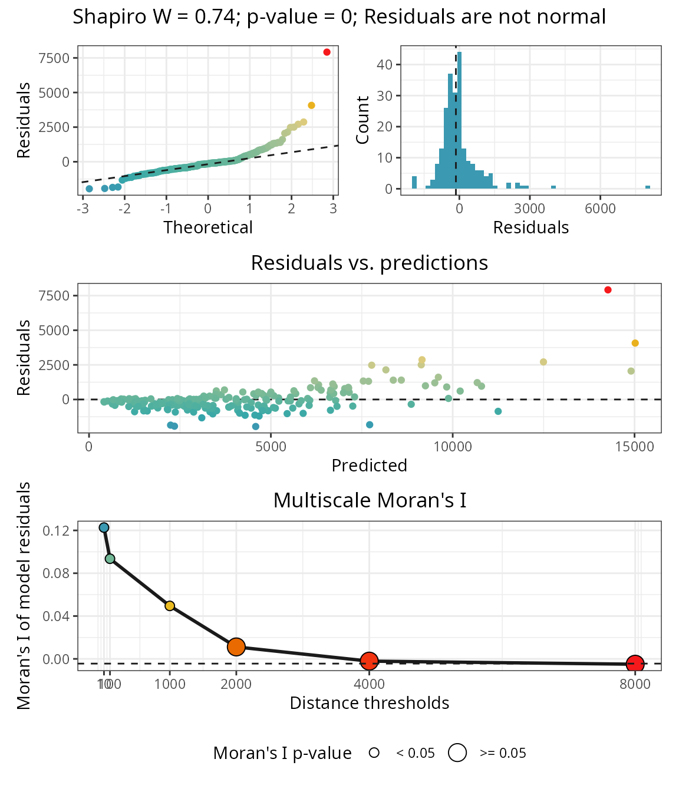 The plot show that the residuals are highly correlated up to a point between 1000 and 2000 km between observations, indicating that there is a component of the response not explained by the current predictors.
Variable importance
Global variable importance
The object importance in m$importance)
contains the variable importance scores. These can be plotted with plot_importance(),
printed with print_importance(),
and the dataframe retrieved with get_importance()
spatialRF::plot_importance(
m,
verbose = FALSE,
fill.color = colors
)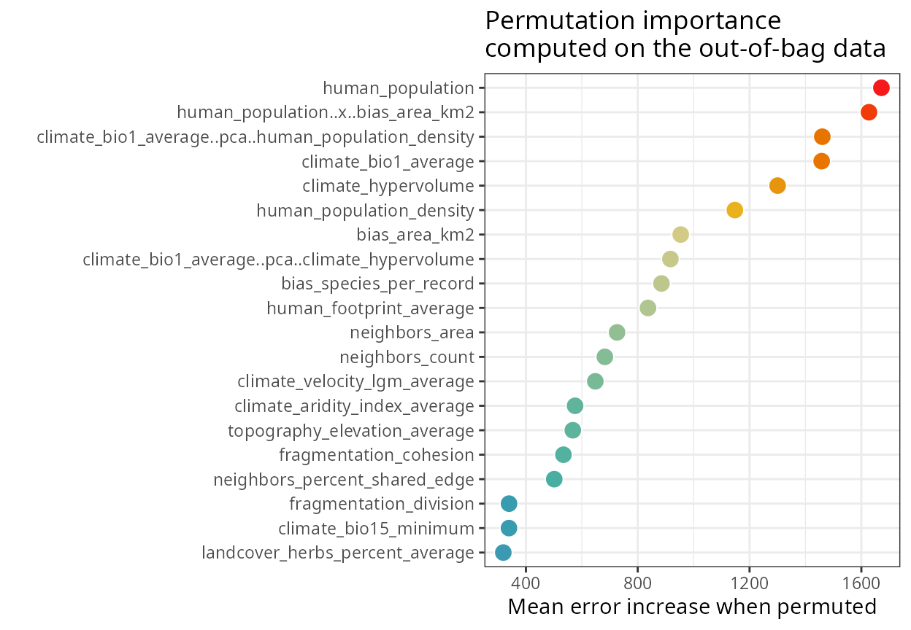
The output of rf() is also compatible with
randomForestExplainer::measure_importance(), which helps
deepen our understanding on variable importance scores.
importance.df <- randomForestExplainer::measure_importance(
m,
measures = c(
"mean_min_depth",
"no_of_nodes",
"times_a_root",
"p_value"
)
)| variable | mean_min_depth | no_of_nodes | times_a_root | p_value |
|---|---|---|---|---|
| bias_area_km2 | 3.71 | 1911 | 16 | 0.17 |
| bias_species_per_record | 3.48 | 2327 | 6 | 0.00 |
| climate_aridity_index_average | 4.18 | 1857 | 5 | 0.63 |
| climate_bio1_average | 2.84 | 2107 | 61 | 0.00 |
| climate_bio1_average..pca..climate_hypervolume | 3.72 | 1828 | 16 | 0.85 |
| climate_bio1_average..pca..human_population_density | 2.91 | 1893 | 73 | 0.30 |
| climate_bio15_minimum | 4.68 | 1702 | 0 | 1.00 |
| climate_hypervolume | 3.00 | 2047 | 46 | 0.00 |
| climate_velocity_lgm_average | 4.24 | 1790 | 9 | 0.97 |
| fragmentation_cohesion | 4.57 | 1638 | 15 | 1.00 |
| fragmentation_division | 5.17 | 1553 | 1 | 1.00 |
| human_footprint_average | 4.63 | 1591 | 7 | 1.00 |
| human_population | 2.66 | 2142 | 69 | 0.00 |
| human_population_density | 3.33 | 1966 | 38 | 0.01 |
| human_population..x..bias_area_km2 | 2.74 | 2027 | 92 | 0.00 |
| landcover_herbs_percent_average | 4.70 | 1803 | 0 | 0.95 |
| neighbors_area | 4.21 | 1756 | 1 | 1.00 |
| neighbors_count | 3.44 | 1642 | 38 | 1.00 |
| neighbors_percent_shared_edge | 3.88 | 1911 | 7 | 0.17 |
| topography_elevation_average | 3.92 | 1927 | 0 | 0.09 |
Contribution of predictors to model transferability
The function rf_importance()
assesses how each predictor contributes to model transferability by
combining leave-one-predictor-out with spatial cross-validation, and
comparing a model trained with the given predictor with a model trained
with all other predictors.
m <- spatialRF::rf_importance(
model = m,
xy = plants_xy, #needs coordinates for cross-validation
cluster = cluster,
fill.color = colors
)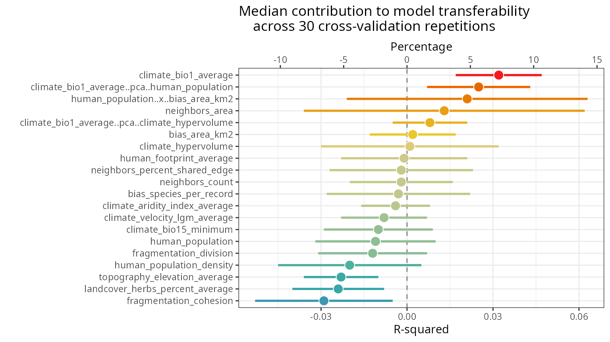
The values in the plot are added as new columns with the suffix
.cv in the dataframe
m$importance$per.variable.
| variable | importance.oob | importance.cv | importance.cv.mad | importance.cv.percent | importance.cv.percent.mad |
|---|---|---|---|---|---|
| human_population | 1671.791 | -0.005 | 0.027 | -1.1 | 10.1 |
| human_population..x..bias_area_km2 | 1627.326 | 0.039 | 0.033 | 8.7 | 12.3 |
| climate_bio1_average..pca..human_population_density | 1460.264 | 0.031 | 0.025 | 6.9 | 9.5 |
| climate_bio1_average | 1458.043 | 0.027 | 0.019 | 6.0 | 7.3 |
| climate_hypervolume | 1300.457 | 0.003 | 0.034 | 0.7 | 12.9 |
| human_population_density | 1147.480 | -0.012 | 0.019 | -2.7 | 7.3 |
| bias_area_km2 | 953.818 | 0.009 | 0.024 | 2.0 | 9.0 |
| climate_bio1_average..pca..climate_hypervolume | 916.876 | 0.012 | 0.013 | 2.7 | 5.0 |
| bias_species_per_record | 884.933 | -0.004 | 0.031 | -0.9 | 11.7 |
| human_footprint_average | 836.722 | -0.002 | 0.013 | -0.4 | 5.0 |
| neighbors_area | 726.045 | 0.019 | 0.049 | 4.2 | 18.5 |
| neighbors_count | 682.395 | 0.008 | 0.019 | 1.8 | 7.3 |
| climate_velocity_lgm_average | 648.276 | 0.005 | 0.021 | 1.1 | 7.8 |
| climate_aridity_index_average | 575.892 | -0.012 | 0.030 | -2.7 | 11.2 |
| topography_elevation_average | 567.783 | -0.014 | 0.016 | -3.1 | 6.2 |
| fragmentation_cohesion | 534.213 | -0.024 | 0.027 | -5.4 | 10.1 |
| neighbors_percent_shared_edge | 501.355 | 0.007 | 0.025 | 1.6 | 9.5 |
| fragmentation_division | 339.658 | -0.008 | 0.016 | -1.8 | 6.2 |
| climate_bio15_minimum | 339.393 | 0.000 | 0.019 | 0.0 | 7.3 |
| landcover_herbs_percent_average | 319.097 | -0.017 | 0.019 | -3.8 | 7.3 |
Local variable importance
The rf() function computes local importance as a
case-by-case average increase in error when a predictor is permuted.
The dataframe of local importance, stored at
m$importance$local, can be retrieved with get_importance_local()
to create a local importance map.
local.importance <- cbind(
plants_xy,
spatialRF::get_importance_local(m)
)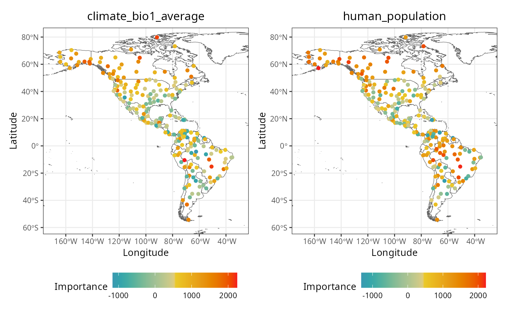
In these maps, a value lower than 0 indicates that the influence of the predictor on the local prediction is worse than what is expected by chance.
Response curves and surfaces
The response curve of a predictor is computed by setting the other predictors to a given quantile (0.1, 0.5, and 0.9 by default).
spatialRF::plot_response_curves(
m,
quantiles = c(0.1, 0.5, 0.9),
line.color = colors[c(1, 50, 100)],
ncol = 3,
show.data = FALSE
)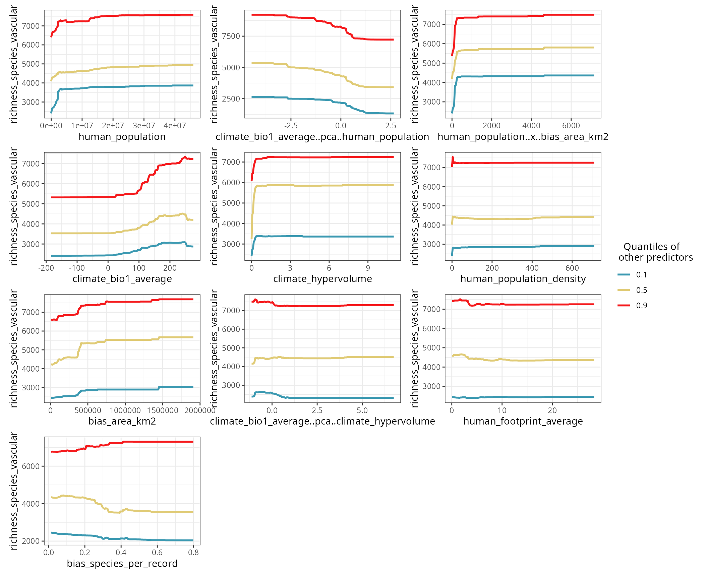
The blue curve (quantile 0.1) shows the point estimate for a predictor when all other predictors are at their lowest values.
Setting the argument quantiles to 0.5 and setting
show.data to FALSE (default option)
accentuates the shape of the response curves.
spatialRF::plot_response_curves(
m,
quantiles = 0.5,
line.color = colors[100],
ncol = 3
)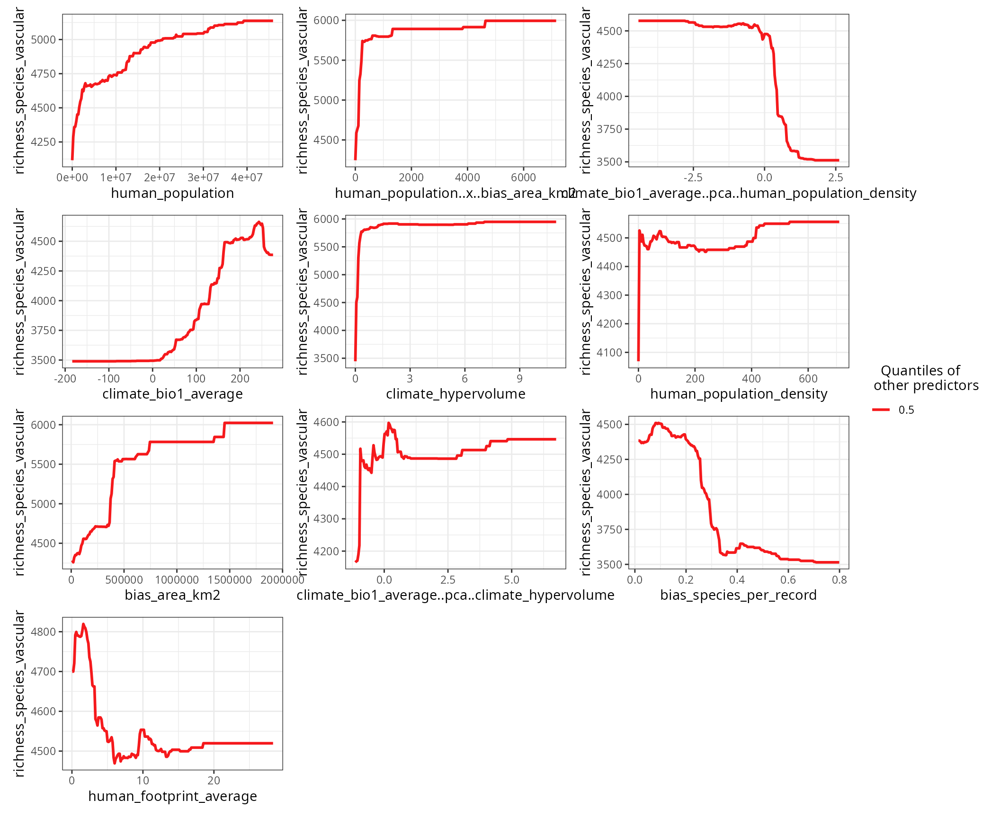
If you need to do your own plots, the function get_response_curves()
returns a data frame with the required data.
response.curves.df <- spatialRF::get_response_curves(m)Interactions between two predictors can be plotted with plot_response_surface().
spatialRF::plot_response_surface(
model = m,
a = "climate_bio1_average",
b = "neighbors_count",
fill.color = colors
)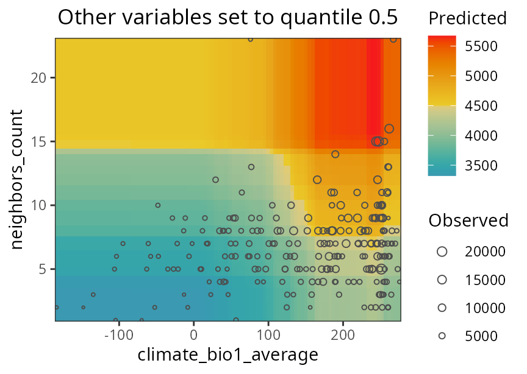
Performance
The performance slot, stored at
m$performance, contains the values of several performance
measures. It be printed via the function print_performance().
spatialRF::print_performance(m)
#>
#> Model performance
#> - R squared (oob): 0.5923737
#> - R squared (cor(obs, pred)^2): 0.9525057
#> - Pseudo R squared (cor(obs, pred)):0.975964
#> - RMSE (oob): 2151.625
#> - RMSE: 929.597
#> - Normalized RMSE: 0.2683594-
R squared (oob)andRMSE (oob)are computed byranger::ranger()on the out-of-bag data (fraction of data not used to train individual trees). From all the values available in theperformanceslot, these are probably the most honest ones. However, out-of-bag data is not fully independent, and therefore will still be inflated, especially if the data is highly aggregated in space. -
R squaredandpseudo R squaredare computed from comparing all observations against predictions. These values will usually be high when spatial autocorrelation is high. - The
RMSEand its normalized version are linear withR squaredandpseudo R squared.
Hyperparameter tuning
The function rf_tuning()
optimizes the values for three critical Random Forest hyperparameters
via spatial cross-validation:
-
num.trees: number of regression trees in the forest. -
mtry: number of variables to choose from on each tree split. -
min.node.size: minimum number of cases on a terminal node.
m <- rf_tuning(
model = m,
xy = plants_xy,
repetitions = 30,
num.trees = c(100, 200, 300),
mtry = c(2, 4, 8),
min.node.size = c(5, 10, 20),
cluster = cluster,
verbose = TRUE
)The function returns a tuned model only if the tuning finds a
solution better than the original model. The tuning results can be
accessed with plot_tuning().
spatialRF::plot_tuning(
model = m,
point.color = colors
)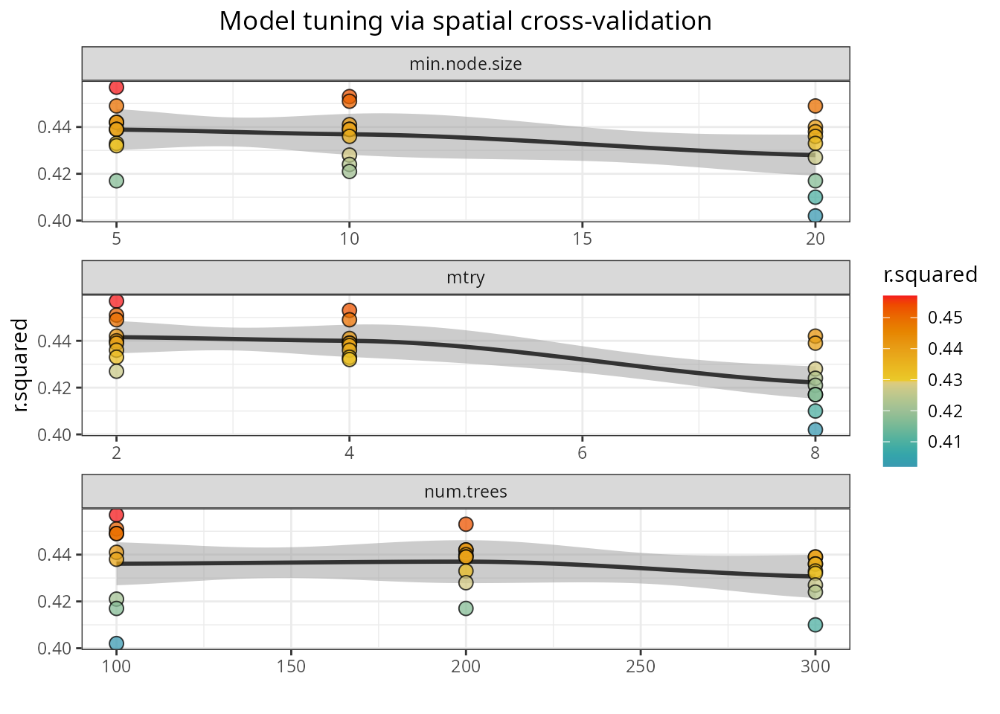
Spatial cross-validation
The function rf_evaluate() provides honest performance scores based on spatial cross-validation. The function separates the data into spatially independent training and testing folds.
m <- spatialRF::rf_evaluate(
model = m,
xy = plants_xy, #data coordinates
repetitions = 30, #number of spatial folds
training.fraction = 0.75, #training data fraction on each fold
metrics = "r.squared",
cluster = cluster,
verbose = FALSE
)The function creates m$evaluation with several objects
that summarize the spatial cross-validation results.
names(m$evaluation)
#> [1] "metrics" "training.fraction" "spatial.folds"
#> [4] "per.fold" "per.fold.long" "per.model"
#> [7] "aggregated"The slot “spatial.folds”, produced by make_spatial_folds(),
contains the indices of the training and testing cases for each
cross-validation repetition. The maps below show two sets of training
and testing folds.

The information available in this new slot can be accessed with the
functions print_evaluation(),
plot_evaluation(),
and get_evaluation().
spatialRF::plot_evaluation(
model = m,
fill.color = colors,
notch = FALSE
)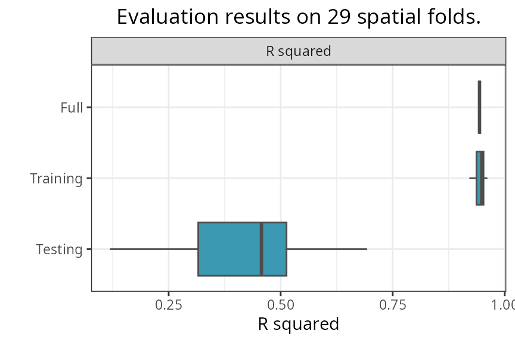
-
Fullis the performance of the model trained on the full dataset. -
Trainingis the performance of the model trained on the training folds. -
Testingis the performance of the model on the testing folds.
The median, median absolute deviation (MAD), minimum, and maximum
R-squared values on the testing folds can be printed with
print_evaluation().
spatialRF::print_evaluation(m)
#>
#> Spatial evaluation
#> - Training fraction: 0.75
#> - Spatial folds: 29
#>
#> Metric Median MAD Minimum Maximum
#> r.squared 0.454 0.126 0.128 0.697Prediction
Models trained with rf() can be predicted as
follows.
Next steps
This tutorial covered non-spatial random forest modeling. To learn how to address spatial autocorrelation in model residuals using spatial predictors, see the Spatial Random Forest Models tutorial.